Epitáfio
2001 - Titãs
The representation of death in theater is an artistic expression that crosses centuries and cultures, playing a a fundamental role in the dramatic narrative and in the dialogue with the audience. Death in the theater is not just a inevitable event, but a powerful tool used to explore the complexities of human existence. It can be portrayed in a variety of ways, from shocking tragedy to satirical comedy, passing through for philosophical questions and deep symbolism. In this context, death on stage not only moves, but it also challenges the audience to reflect on existential themes and the human condition itself. This text explores the different facets of death in theater, highlighting how this representation can captivate, provoke reflections deep and enrich the theatrical experience.
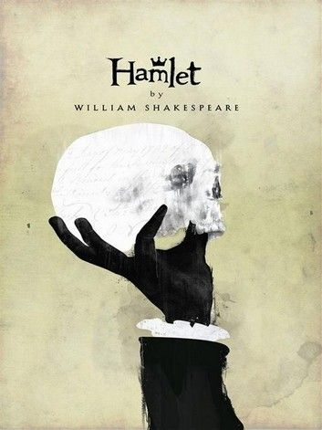
"Hamlet" by William Shakespeare: One of the most famous works of literature and theater, "Hamlet" revolves around around the Danish prince Hamlet, who seeks to avenge his father's death. The play explores not only the physical death, but also existential questions, such as life after death and the uncertainty of existence human. The story of "Hamlet" takes place in Denmark and revolves around Prince Hamlet, who is in mourning for the sudden death of his father, King Hamlet, and shocked by the quick marriage of his mother, Gertrude, to his uncle Claudius, who becomes the new king. Shortly after the king's death, King Hamlet's ghost appears to his son and reveals that he was murdered by Cláudio. The ghost asks Hamlet to avenge his death by creating thus the central conflict of the play. The play is known for its complexity and psychological depth. Hamlet's character is many times portrayed as a tormented and indecisive man, struggling with moral and emotional dilemmas. He is often cited for his famous soliloquy "To be or not to be", in which he contemplates the nature of existence and the morality of taking revenge.
"Death of a Salesman" is a play written by renowned American playwright Arthur Miller. The play premiered on Broadway in 1949 and is one of the theater's most important and influential works. 20th century American. She received the Pulitzer Prize for Drama in 1949 and is often mentioned as one of the most significant pieces of the post-war period in the United States. The plot of the play revolves around the character Willy Loman, a traveling salesman who struggles to support your family and achieve the "American dream". Willy believes that success is achieved through selling and ability to impress others. However, as you get older and face difficulties financial problems, he begins to question his life choices and realize that his dream may be out of reach. range. Arthur Miller's work has been widely studied and performed around the world and continues to be relevant, since many of the themes it addresses remain relevant in contemporary society. She offers an insightful analysis of the social, familial and personal pressures that shape the lives of individuals, as well as the loss of identity and the desperate search for meaning in life.
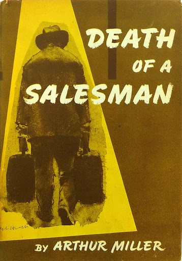
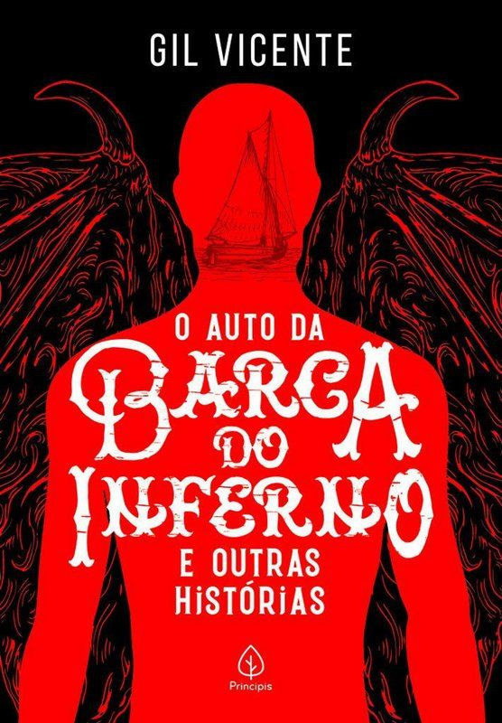
“As Barcas” are a set of plays written by Gil Vicente, an important Portuguese playwright from the 16th century. These works are part of a trilogy that also includes "O Auto da Barca do Purgatório", “O auto da Barca do Inferno” and “O Auto da Barca da Glória”. Gil Vicente is considered the father of theater in Portugal and its works are a fundamental part of Renaissance literature and theater in Portuguese. Portuguese. In the play, topics related to death, the evaluation of human actions and divine justice are explored. Furthermore, the work makes a blunt criticism of the hypocrisy and moral deficiencies that were characteristics of society at the time. Gil Vicente uses the supernatural setting of boats and boatman as a means to deepen reflection on human and social issues, employing dialogues humorous and absurd situations with the aim of generating comedy.
The play "Auto da Barca do Inferno" was written around 1517 and is a moral and religious satire that addresses the issue of life after death and the fate of the souls of the deceased. The plot unfolds around of the arrival of several characters at the edge of a river, where two boats are waiting to take them to their destinations. final destinations: one to Heaven and the other to Hell. The characters that appear in the play are representatives of the different strata of society at the time, since the clergy to the peasants, including nobles, merchants and others. Each character is subjected to a judgment by an Angel and a Devil, who decide whether the person will go to Heaven or Hell, based on their actions and behavior in life.
Death is a theme deeply explored in music throughout human history. Musicians from all genres and cultures have used music as a way to express their feelings and reflections on the mortality. Music offers a safe, cathartic space to address the complexity of emotions that surround death, from sadness and loss to the celebration of life and the memory of those who have departed. It is portrayed in different ways, whether through poetic lyrics, emotional melodies or arrangements that evoke a feeling of transcendence. Many songs pay homage to artists and public figures who have left us, while others explore philosophical and existential themes, questioning the meaning of life and the mystery of death.
"Wake Me Up When September Ends" is a song by the American punk rock band Green Day. It is part of the
album "American Idiot", released in 2004.
The song was written by the band's lead singer and guitarist,
Billie Joe Armstrong.
The song is a tribute to Billie Joe's father, who passed away when he was just 10 years old. The month of
September has a special meaning for him, as it was the month his father passed away.
The music expresses
feelings of grief, loss and longing, and many listeners interpret it as a reflection on the
passage of time and the way people deal with pain and absence.
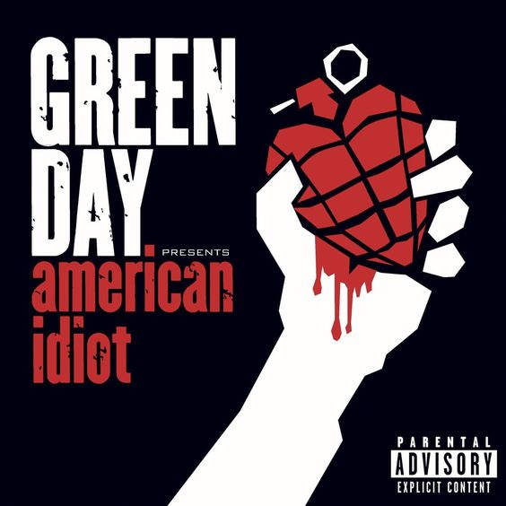
2004 - Green Day
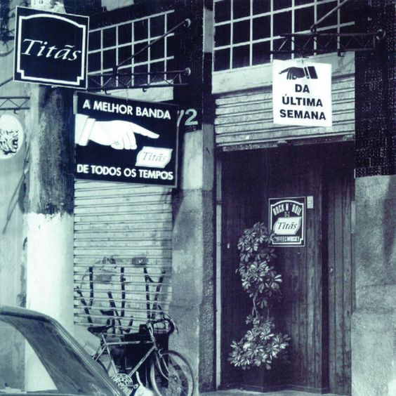
2001 - Titãs
"Epitáfio" is a song by the Brazilian band Titãs, released in 2001 on the album "A Melhor Banda de Todos os
Tempos da Última Semana". The song is one of the group's best-known and iconic songs and is often
remembered as one of the band's biggest hits.
The lyrics of "Epitafio" are notable for their melancholic and reflective tone. The song addresses topics such as
ticket
of time, the ephemerality of life and the inevitability of death. The song also makes references to different
moments of life, such as birth, childhood, youth and old age, indicating that all these
undertakings are ephemeral and fleeting.
The lyrics highlight the idea that one should not leave it for later
what can be done today, because time waits for no one.
The song "Canto para Minha Morte" is a song by the Brazilian progressive rock band Secos & Molhados,
released on their eponymous debut album, released in 1973. The band Secos & Molhados was known for
its theatrical and visually impactful approach, as well as its poetic and melodic lyrics.
The song is one of the band's most famous and was written by Mário Lins and João Ricardo, who also
it was the
lead singer of the band.
The song presents a dark and introspective atmosphere, with lyrics that explore
themes of mortality, loneliness and reflection on life and death. João Ricardo's emotional voice and the
The band's quirky instrumentation affects to create a unique musical experience.
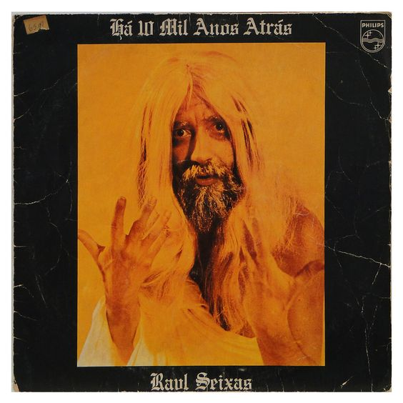
1975 - Secos & Molhados
Death is a profoundly influential theme in art history, playing a significant role in the evolution of the works of different painters over the centuries. This element of the human experience awakened a wide range of emotions and reflections in creative minds, inspiring a rich variety of artistic representations. Death has been portrayed in many ways, from funeral scenes to personification of death as a mythological figure, allowing painters to explore not only the inevitable end of life, but also themes such as mortality, transcendence, suffering and beauty ephemeral. In this context, see some of these paintings below:
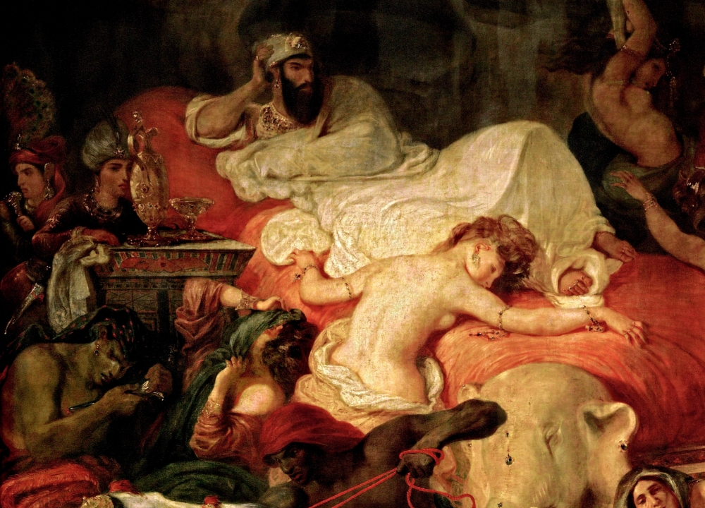
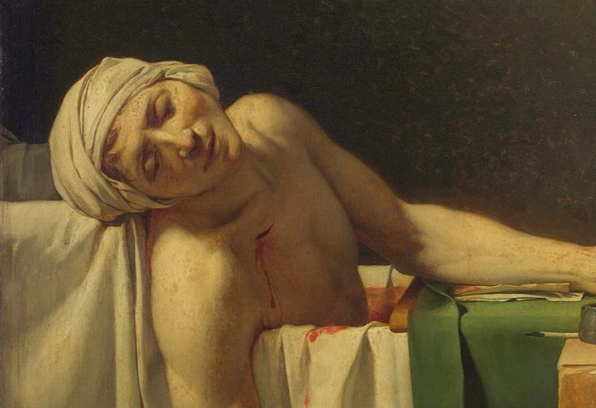
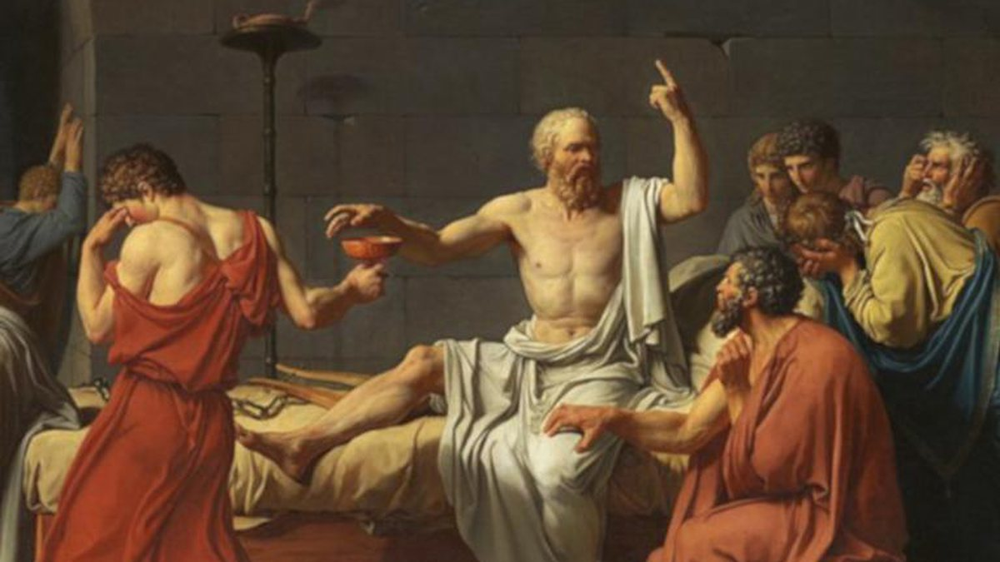
Death is one of the deepest and most omnipresent themes in literature, permeating the pages of countless works throughout the history of humanity. From ancient epics to novels contemporary times, death is an intrinsic element of the human condition, which generates reflections, fears and deep questions. Through literature, writers explore the complexity of death, from its inevitability to your emotional, philosophical and existential implications. The way death is portrayed in literature varies enormously, ranging from dark and terrifying depictions to more contemplative and poetic. This text will explore the presence of death in literature, analyzing how different authors and cultures have interpreted it over time, and how it plays a role fundamental in the construction of narratives, characters and literary themes.
"The death of Ivan Ilyich" is a novel written by renowned Russian author Lev Tolstoy, published by first time in 1886. The work is considered one of the greatest achievements of Russian literature and is often praised for its profound exploration of the human condition, especially in relation to mortality and the search for meaning in life. The story revolves around Ivan Ilyich Golovín, a judge from a small town in 19th-century Russia. XIX. Ivan Ilyich is an ordinary man, concerned mainly with following social conventions and climbing the ladder. bureaucratic position. He marries a woman named Praskovya, more out of convenience than love true, and embarks on a legal career that seems to bring stability and respect to his life. However, Ivan Ilyich's life takes an unexpected turn when he develops an illness mysterious and debilitating. As his health deteriorates, he is called to face his own mortality and the superficial nature of their existence. Ivan Ilyich's physical and emotional suffering leads him to question the meaning of life and face the alienation he feels from others, especially those who surround him, who are unable to understand or share his anguish. This novel is one of Tolstoy's most studied and scientific works and continues to be a source of inspiration and reflection on the human condition and the search for the meaning of life.
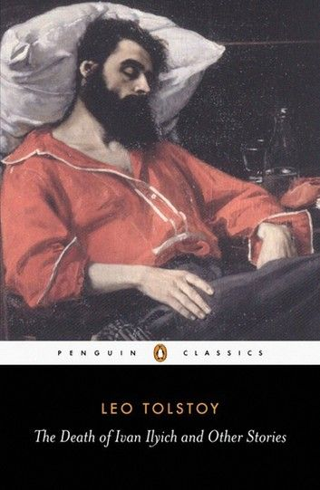
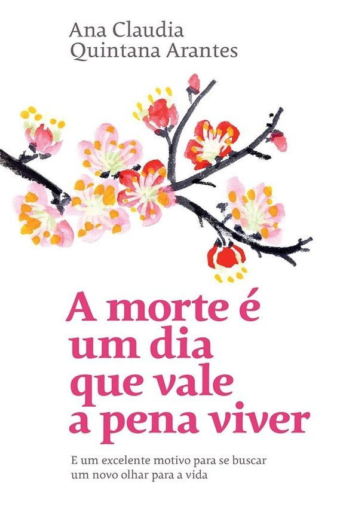
"Death is a Day Worth Living" is a book written by Dr. Ana Cláudia Quintana Arantes, a doctor specializing in palliative care. In this book, the author shares her experiences and reflections on death and how we can face it in a more meaningful way. The title suggests that, Despite our natural aversion to death, it is possible to find value and purpose in the experience of death, both for those who are dying and for those who care for them. The book addresses various aspects related to death, including stories from patients that the author throughout his career, his own personal experiences and the challenges faced by health professionals who deal with palliative care. Dr. Ana Cláudia Quintana Arantes emphasizes the importance of providing comfort, compassion and dignity to terminally ill patients, helping them to face death in a less painful and more serene way. In addition, the book also discusses how society often avoids talking about death and how that can be harmful. The author argues that, by facing death head on and talking openly about Through it, we can learn to appreciate life more and create deeper, more meaningful relationships with others. others.
"Death is a Party" is a novel written by Brazilian author João Paulo Cuenca. Published in 2017, the The book approaches the theme of death in a unique way, exploring it from a poetic and philosophical perspective. The work is a reflection on the ephemerality of life and how people deal with the inevitability of death. The plot unfolds in Rio de Janeiro and follows an unnamed narrator who, after the death of his grandfather, begins a search for understanding what death means and how contemporary society deals with it she. On this journey, he meets peculiar characters and gets involved in intriguing situations, mixing reality with imagination. The book mixes elements from different literary genres, including magical realism, philosophy existentialist and poetry, creating a multifaceted and challenging narrative. Cuenca uses a rich, symbolic language to explore deep questions about life, death, memory and identity. In addition, “Death is a Party” also addresses the influence of contemporary culture, such as networks social and digital culture, in the same way that people face death and deal with loss. O book sheds light on how modern society often seeks to avoid or mask the reality of death, while highlighting the importance of accepting the finiteness of life as an integral part of human existence.
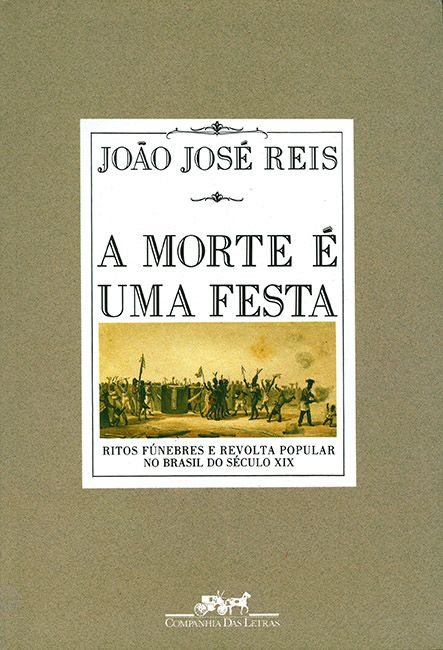